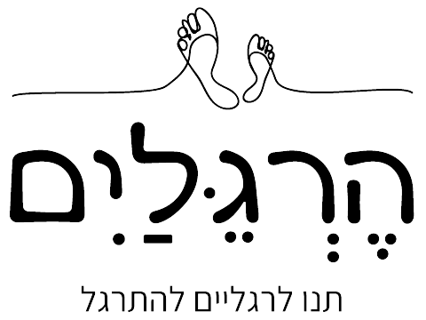

הרגליים - ארנה קליין - רפלקסולוגית מוסמכת
קצת עליי
ארנה קליין - מטפלת מוסמכת ברפלקסולוגיה ודמיון מודרך, בוגרת מכללת רידמן.
בחרתי ברפלקסולוגיה מתוך אמונה עמוקה ביכולתה לתת מענה נכון למגוון מצבים ותופעות. בגישתי הטיפולית אני משלבת הקשבה לצורכי המטופלת והתאמת מענה טיפולי מדוייק תוך הבנה שריפויי אמיתי מגיע מתוך איזון של הגוף עצמו.
המלצות
אורנה מקסימה עם אנרגיות טובות. מטפלת קשובה ורגישה. ממליצה מאוד.
אנה נקסדורף
מטפלת מעולה, מומלצת מאוד.
ד"ר מירה המאירי
חיפשתי מקום קרוב לבית. מצאתי עולם ומלואו.. אישה נעימה חכמה ישרה ומיקצועית!!! מצאתי בית. רפלקסולוגיה היא אחת הדרכים לאבחן לטפל וגם להתפנק. אין ספק שזה המקום. זכיתי.
מינה נלגבאץ
על הרגל
פנקי את עצמך או מישהי מיוחדת בחוויה מפנקת!
שאלות ותשובות
כאן תמצאו תשובות לשאלות הנפוצות בנושא רפלקסולוגיה - כל מה שתרצו לדעת על הטיפול, היתרונות והתהליכים.
מהי רפלקסולוגיה?
רפלקסולוגיה היא שיטת טיפול משלימה המתמקדת בלחיצות ונגיעה בנקודות בכפות הרגליים, הידיים או האוזניים - אשר משקפות את מערכות הגוף. טיפול זה מסייע לגוף שיצא מאיזון, לחזור אליו. משפר את תפקוד האיברים על ידי הפחתת מתחים.
איך עובדת רפלקסולוגיה?
הטיפול מתבצע באמצעות לחיצות על נקודות ספציפיות בכפות הרגליים או הידיים, הלחיצות מפעילות תהליכים לשחרור חסימות אנרגטיות ועידוד תהליכי ריפוי טבעיים בגוף.
מהם היתרונות הבריאותיים של רפלקסולוגיה?
הרפלקסולוגיה עשויה לסייע בהפחתת מתחים, שיפור איכות השינה, הגברת זרימת הדם, שיפור העיכול והפחתת כאבים, כמו גם לעידוד רגיעה ואיזון נפשי.
האם טיפול ברפלקסולוגיה כואב?
רוב המטופלים מתארים את הטיפול כעדין ונעים ללא כאבים.יש מקרים בהם מתבקש בטיפול ללחיצות מעט חזקות אך הלחץ מותאם אישית לתחושת הנוחות של כל מטופל.
כמה זמן נמשך טיפול טיפוסי?
מפגש טיפולי ברפלקסולוגיה נמשך כשעה, בהתאם לצרכי המטופל והמטרות הטיפוליות.
האם יש תופעות לוואי בטיפול?
לרוב הטיפול אינו גורם לתופעות לוואי משמעותיות. ייתכן שתחושו עייפות קלה או שחרור רגשי לאחר הטיפול - תגובות נורמליות כחלק מתהליך הריפוי. לעיתים יש ריאקציות, תחושות באיברים שטופלו, אך הן חולפות במהרה.
מי יכול לעבור טיפול ברפלקסולוגיה?
הרפלקסולוגיה מתאימה למבוגרים, לילדים ואף לנשים בהריון (בהתייעצות עם מומחה). מומלץ להתייעץ עם מטפל מוסמך לפני תחילת הטיפול, במיוחד במקרים מורכבים. לעיתים תתבקשו להביא התייעצות/המלצה של רופא מטפל. כדאי לזכור שראוי לתת למטפל מושג על מצבכם הבריאותי כדי שיתאים את הטיפול לצרכיהם.
כמה מפגשים נדרשים להשגת תוצאות?
התוצאות תלויות במצב הבריאותי ובמטרות האישיות. לעיתים קרובות סדרת טיפולים של 5 עד 8 מפגשים יכולה להביא לשיפור ניכר בתחושת הרוגע והבריאות הכללית.
האם הרפלקסולוגיה מתאימה לטיפול במחלות כרוניות?
הרפלקסולוגיה יכולה לשמש כטיפול משלים לשיפור איכות החיים והפחתת תסמינים אצל מטופלים עם מחלות כרוניות - אך אינה מחליפה טיפול רפואי קונבנציונלי.
כיצד לבחור מטפל רפלקסולוגי מקצועי?
חשוב לבחור מטפל בעל הסמכות, ניסיון והמלצות חיוביות. יש לוודא שהמטפל יוצר סביבה נעימה ובטוחה ומבין את הצרכים האישיים שלך.
יצירת קשר
כתובת: כפר תבור, מורן 9 ב'
טלפון: 054-9794-777
אימייל: orenkl162@gmail.com
פייסבוק: Orna Nissani Klein
שעות פתיחה: א'-ו בתיאום מראש